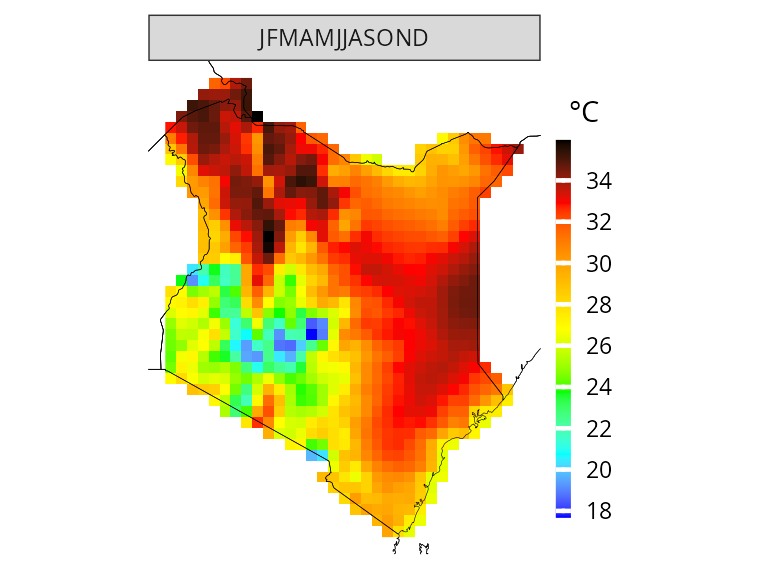
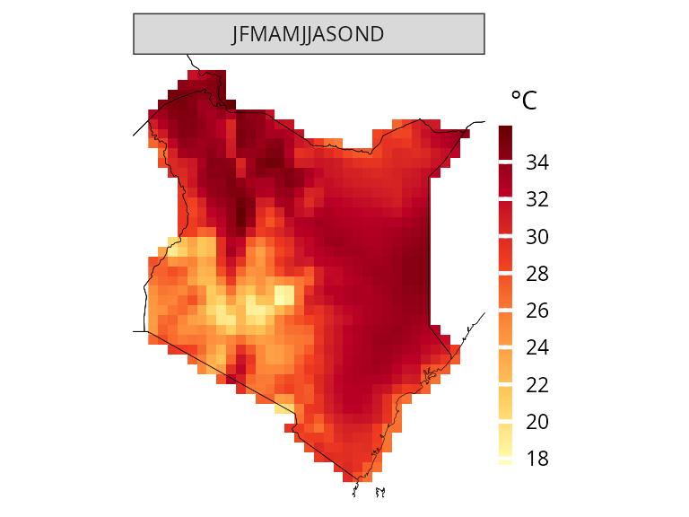
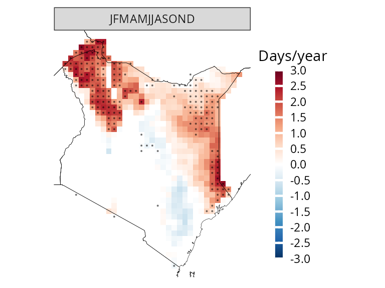

More about CAVAanalytics
Introduction.RmdThe main purpose of CAVAanalytics is making the processing and visualization of multiple climate models simple. Additionally, CAVAanalytics offers an access point to download CORDEX-CORE climate models, the high resolution (25 Km) dinamically-downscaled climate models used in the IPCC report AR5. CAVAanalytics also offers access to state-of-the-art reanalyses datasets, such as W5E5 and ERA5.
CAVAanalytics is built on top of climate4R and several tidyverse packages. The current available data that can be downloaded using the package are:
- CORDEX-CORE simulations (3 GCMs donwscaled with 3 RCMs for two RCPs)
- W5E5 and ERA5 reanalyses datasets
Available variables are:
- Daily maximum temperature (tasmax)
- Daily minimum temperature (tasmin)
- Daily precipitation (pr)
- Daily relative humidity (hurs)
- Daily wind speed (sfcWind)
- Daily solar radiation (rsds)
Loading CORDEX-CORE data
Below we are automatically downloading all CORDEX-CORE simulations alongside the observational dataset W5E5 for Kenya. As you can see, it is extremely simple. We will see how to work with locally available models in another vignette.
Note that this process can take a while, depending on the size of the country and the number of years specified
# to download a specific area, set country=NULL and specify xlim and ylim arguments
kenya_exmp <- load_data(path.to.data = "CORDEX-CORE", country = "Kenya", variable = "tasmax",
years.proj = 2030:2055, years.hist = 1980:2005, domain = "AFR-22", path.to.obs = "W5E5")You can explore the output using attributes(kenya_exmp).
# the main output of the loading function is a tibble with list column containing all the downloaded data
class(kenya_exmp[[1]])
#> [1] "tbl_df" "tbl" "data.frame"
colnames(kenya_exmp[[1]])
#> [1] "experiment" "models_mbrs" "obs"
kenya_exmp[[1]]$experiment
#> [1] "historical" "rcp26" "rcp85"
# the column models_mbrs stands for model members. The structure of this element comes from the loadeR package. The data is contained in the data element, and as you can see, it has 6 members. CAVAanalytics automatically binds together multiple models and checks for temporal consistency.
dim(kenya_exmp[[1]]$models_mbrs[[1]]$Data)
#> [1] 6 9278 42 33Projections
What if you want to have a look at what will be the projected maximum temperature in Kenya for the 2030-2055 time period? This is easy to do with CAVAanalytics:
# you can specify the season. In this case we are looking at the whole year
proj_kenya <- projections(kenya_exmp, season=1:12)
# stat can take either mean or sd. It is used in combination with ensemble=T. Default is always mean
plotting(proj_kenya, ensemble=T, stat="mean", plot_titles = "mean tasmax")
plotting(proj_kenya, ensemble=F, stat="mean", plot_titles = "mean tasmax")
Sometime looking at mean temperatures is not useful. Maybe we are interested in understanding the number of days in which certain conditions are projected to occur. For example, the number of days with maximum temperatures above 35 °C.
proj_kenya_35 <- projections(kenya_exmp, season=1:12, uppert=35)
plotting(proj_kenya_35, ensemble=T, plot_titles = "N.days > 35", palette=c("white", "orange", "red", "darkred"))
Ok, then what about model biases? How can we correct for those? Again, this is simple to do with CAVAanalytics, because it automatically implements bias correction with the empirical quantile mapping method. Note that the resolution has changed because we have downloaded the W5E5 dataset which is at 50 Km resolution. To preserve CORDEX-CORE resolution we need to use ERA5 for bias-correction.
# bias correction is applied with the widely used empirical quantile method
proj_kenya_35bc <- projections(kenya_exmp, season=1:12, bias.correction = T, uppert=35)
plotting(proj_kenya_35bc, ensemble=T, plot_titles = "N.days > 35 after bc", palette=c("white", "orange", "red", "darkred"))
Climate change signal
While looking at future periods might be useful, sometimes we are more interested in understanding delta changes, hence the relative increase or decrease in mean maximum temperatures compared to baseline. This is also possible with CAVAanalytics:
ccs_kenya <- climate_change_signal(kenya_exmp, season=1:12)
plotting(ccs_kenya, ensemble=F, plot_titles = "Mean tasmax change", legend_range = c(-3, 3), palette = c("blue", "cyan", "green", "white", "yellow" ,"orange", "red"))
Trends
While looking at delta changes and absolute values for projections is useful, it does not tell us about temporal trends. In CAVAanalytics, the function trends allow us to do just that. For example, let’s assume we want to know whether Kenya is projected to register a significant increase in yearly maximum temperatures:
# the historical argument allows us to study trends for the future or for the past. Note that for historical = T, we need to have specified path.to.obs because this option does not work with the historical experiment of climate models but with observation
trd_kenya <- trends(kenya_exmp, season=1:12, historical = F)
plotting(trd_kenya, ensemble=F, plot_titles = "°C/year", frequencies = F, spatial_aggr = F)
While we can visualize the results spatially, we can also look at temporal trends. Note that in the background, CAVAanalytics uses modern statistical techniques to draw conclusion on the significance of the slope parameter.
plotting(trd_kenya, ensemble=T, plot_titles = "°C/year", spatial_aggr = T, frequencies = F)
Rather than performing spatial averages and visualize trends, we can also appreciate the distribution of annual mean tasmax across Kenya by specifying frequencies =T
plotting(trd_kenya, ensemble=T, spatial_aggr = F, frequencies = T, n.groups = 2)